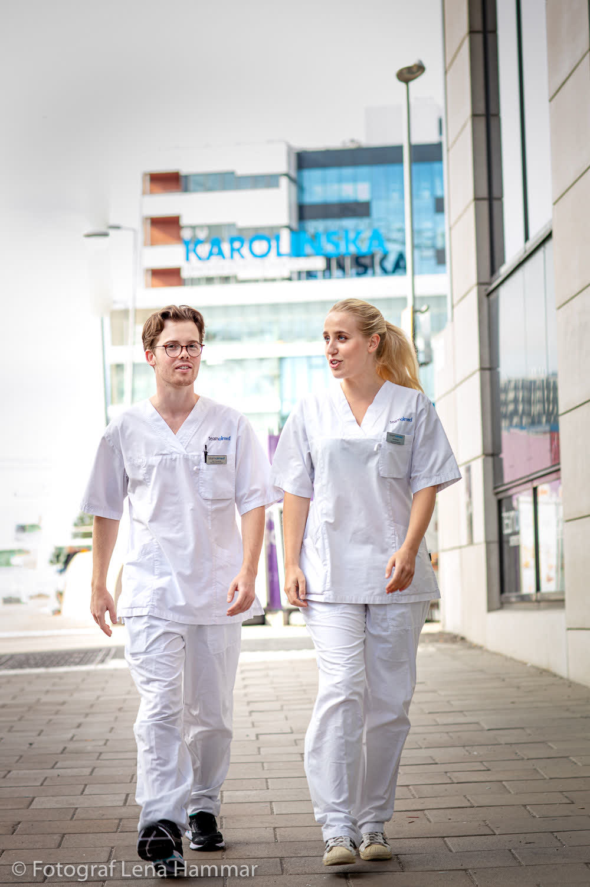
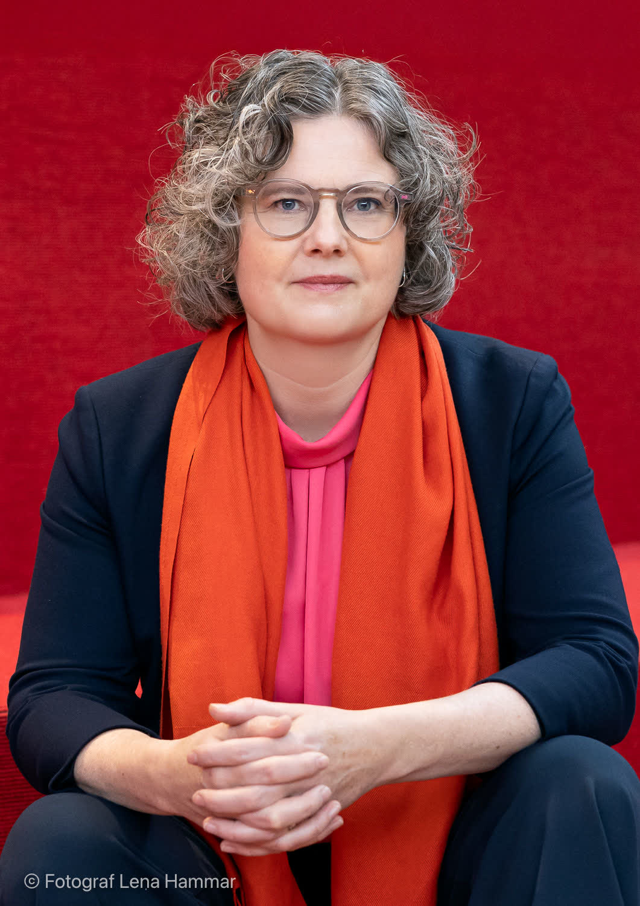
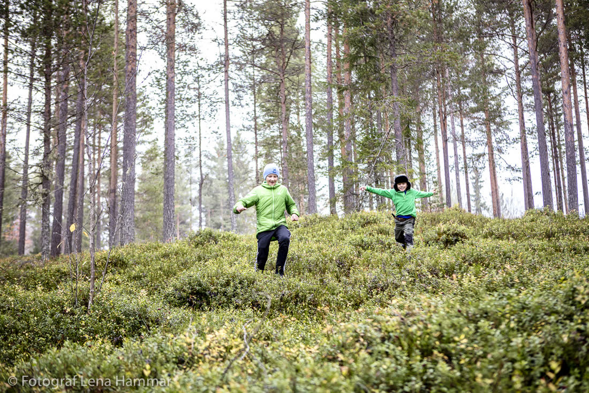

Svartvitt i filmen.
Full färg på dagen.


Utvalt bröllop
160 gäster, 40 meter långbord mellan tomatplantorna och ett åskväder som drog förbi precis under förrätten. Ingen gick hem före tre.


Sommaren 2026 på och runt Djurgården. Mest färg, lite svartvitt, mycket champagne på fel ställen.






Jag började som modefotograf i Paris och kom hem för att jag saknade människor som skrattar på riktigt. Nu bor jag tio minuter från Skansen och har fotat på i princip varje brygga på Djurgården.
Jag är rak: jag säger till om slöjan sitter snett och när ni ska sluta posera. Ni kommer tacka mig.
Förutom bröllop fotar jag porträtt, familjer och företag som vill se ut som om de har stil.


3 timmar. Vigsel, gratulationer, porträtt på Djurgården. 250 bilder.
10 timmar. Från frisören till första dansen och lite till. 800+ bilder, fine art-galleri.
Två dagar, två fotografer, handbunden album i linne och en svartvit kortfilm från dagen.
"Vera fick oss att se ut som ett omslag och samtidigt exakt som oss själva. Min mamma grät när hon såg galleriet. Min pappa också, men han förnekar det."
Ebba & Noah, Rosendal, juni 2026Nej, hela Stockholm och gärna utomlands. Djurgården är bara där jag känner varje träd.
Tvärtom. Ni får allt i färg och ett urval i svartvitt där det gör bilden bättre.
Max 24. Så att varje galleri får den tid det förtjänar.

Berätta om er dag. Jag ringer upp inom 24 timmar.